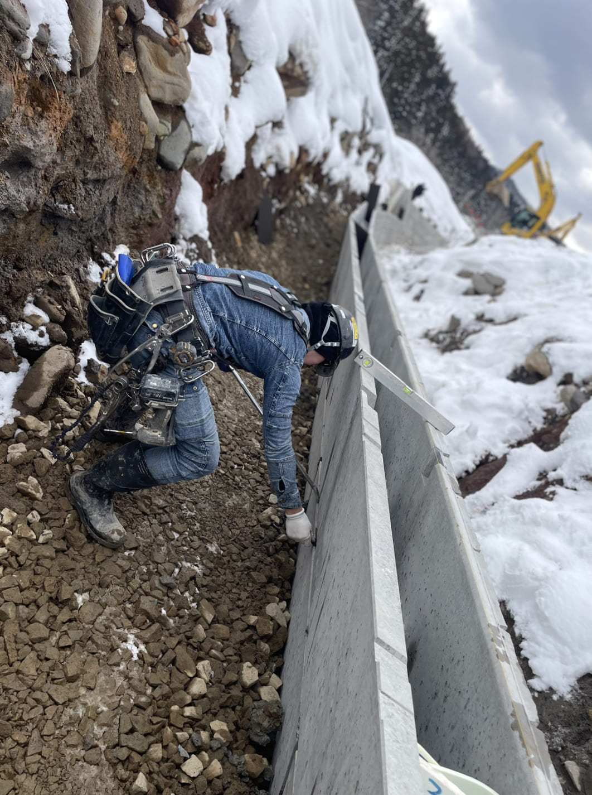
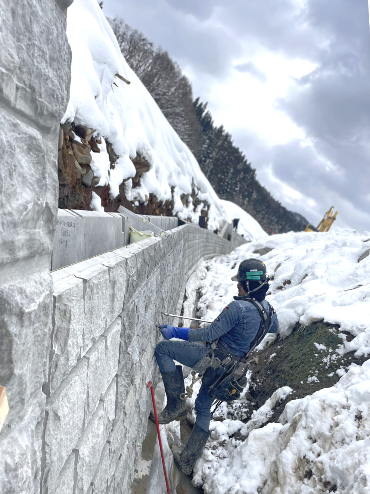

ホーム
会社概要
事業内容
施工実績
採用情報
お問い合わせ
service
事業内容
業務一覧
断面修復工
高圧洗浄
はつり
左官
吹付け
表面保護
法面工
ラス張り
吹付け
フレーム組立
ブロック積み
型枠組立・注入
炭素繊維シート
足場組立・解体
作業の様子
コンクリートはつり
コンクリート吹付け
ブロック積み


型枠組立・注入
足場架設
炭素繊維シート
法面工
施工実績
works
発注先
場所
工事名
東北農政局
秋田県大仙市
田沢二期農業水利事業
田沢疏水左岸幹線用水路(その９)工事
東北農政局
秋田県大仙市
田沢二期農業水利事業
田沢疏水左岸幹線用水路(その９)工事
東北農政局
秋田県大仙市
田沢二期農業水利事業
田沢疏水左岸幹線用水路(その９)工事
一覧を見る